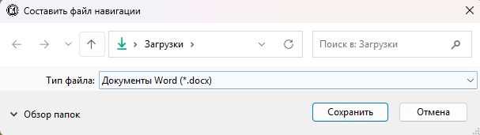
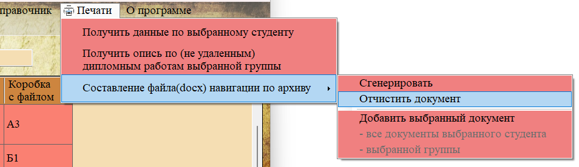
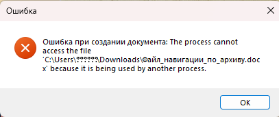

После того как все необходимые элементы (документы, документы студентов, документы групп) добавлены, необходимо сгенерировать итоговый навигационный файл. Эта функция создаёт документ Microsoft Word со всей собранной информацией и предлагает его распечатать.

Рис. 1. Пункт «Сгенерировать» активен, когда есть добавленные элементы
Порядок действий
1. Убедитесь, что вы добавили хотя бы один элемент в навигационный файл (пункты «Сгенерировать» и «Отчистить документ» должны быть активны).
2. В главном меню выберите «Печати → Составление файла навигации по архиву → Сгенерировать».

Рис. 2. Диалог выбора места сохранения файла
3. В появившемся диалоговом окне:
— Выберите папку для сохранения.
— При необходимости измените имя файла (по умолчанию предлагается «Файл_навигации_по_архиву.docx»).
— Нажмите кнопку «Сохранить».
4. Программа создаёт документ Word и сохраняет его по указанному пути.

Рис. 3. Запрос на отправку документа на печать
5. После успешного сохранения появится запрос: «Документ успешно создан. Отправить его на печать?»
— Нажмите «Да» — документ будет отправлен на принтер по умолчанию.
— Нажмите «Нет» — файл останется только сохранённым.
Структура итогового навигационного файла

Рис. 4. Пример полностью сформированного навигационного файла
Сгенерированный документ имеет следующую структуру:
— Заголовок: «НАВИГАЦИЯ ПО АРХИВУ» (крупный жирный шрифт, выравнивание по центру).
— Перечисление элементов в порядке добавления:
Для отдельного документа:
— Заголовок «Документ:»
— Строка с информацией: «Тема документа: "...", тип документа: "...", студент: "...", стеллаж: ..., полка: ..., название коробки: "...", дата сохранения документа: ...»
Для всех документов студента:
— Заголовок: «Все документы студента "Иванов Иван Иванович":»
— Маркированный список всех документов студента с такой же детальной информацией.
— Затем подзаголовок «Удаленные документы:» и список удалённых документов.
Для всех документов группы:
— Аналогичная структура: заголовок, список обычных документов, подзаголовок «Удаленные документы:», список удалённых.
Очистка документа (начать заново)

Если вы хотите собрать новый навигационный файл с другими документами, используйте пункт «Отчистить документ». Он полностью удаляет все ранее добавленные элементы из памяти программы. После очистки пункты «Сгенерировать» и «Отчистить документ» снова станут неактивными.

Рис. 5. Состояние меню после очистки
Возможные ошибки
Ошибка: «Не удалось сохранить файл»
— Проверьте, есть ли у вас права на запись в выбранную папку.
— Убедитесь, что файл с таким именем не открыт в другой программе (например, в Word).

Рис. 6. Сообщение об ошибке при создании файла
Ошибка при печати
— Если после нажатия кнопки «Да» ничего не происходит, проверьте, установлен ли принтер по умолчанию.
— Можно открыть сохранённый файл вручную и отправить на печать из Word.
Советы по использованию
— Планируйте сбор заранее — перед генерацией файла добавьте все нужные документы, студентов и группы.
— Используйте разные файлы для разных задач — после генерации документа очистите список и начните сбор для следующей задачи.
— Сохраняйте файлы с осмысленными именами — например, «Навигация_студенты_группа_Гр-1а.docx» или «Навигация_дипломы_2024.docx».